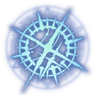

The Condenser, also called the Tidal Scholar pathway, centers on astronomy and the manipulation of fundamental forces: gravity, electromagnetic forces, celestial bodies, cosmic voids, fusion, cosmic laws, attraction, weight, and density. It is a non-standard Boon pathway advanced through prayer to the Supernova Dominator.
Non-standard pathway lore and Outer Deity corruption details contain major story spoilers.Detailed description
The Condenser, also called the Tidal Scholar pathway, centers on astronomy and the manipulation of fundamental forces: gravity, electromagnetic forces, celestial bodies, cosmic voids, fusion, cosmic laws, attraction, weight, and density. It is a non-standard Boon pathway advanced through prayer to the Supernova Dominator.
Paraphrased from the Lord of the Mysteries Wiki pathway article.
Complete wiki information
Full main-article information imported from the Condenser Pathway wiki article. Existing archive pathway details above are preserved.
Space is Time, Time is Space, Heaviness causes Slowness, and Starlight brings Disorder.
Overview
The Condenser Pathway revolves around the usage of fundamental forces while possessing astronomical knowledge tied to the stars. It specializes in manipulating gravity, electromagnetic forces, grazing celestial bodies, and creating cosmic voids. At High-Sequences, this Pathway holds authorities over Fusion, Fundamental Forces, Gravity, Weight, and Density.[2] The power of this pathway primarily emanates from the stars and the land beneath. Only a small portion of it involves the sea.[3]
This Pathway is one of the new Pathways introduced in Circle of Inevitability. It exists outside the twenty-two Standard Pathways, but is still classified into Sequence 9 to Sequence 0.[4]
On Earth, the Beyonders of this Pathway do not advance through Potions, but by praying to the Outer Deity Supernova Dominator, who is the Above the Sequence of this Pathway, for a Boon. The corresponding Sefirah is the Supernova Dominator's currently unnamed Sefirah.
This Pathway is the only Pathway under the Supernova Dominator.[2]
Sequence Levels
Pathway Symbol

The official symbol of the Condenser Pathway.[5]
Corresponding Ingredients
Browse the local Condenser Pathway ingredient archive →
Unknown
Mythical Creature Form
Massive fusion clusters composite being, with its core also consisting of countless fusion clusters. The being is capable of taking forms such as a giant, a dragon, or even an indescribable shape.[2]
Radiant Angel
"They" are radiant beings of starlight with six pairs of wings.[6]
Star Dragon
"They" are colossal transparent dragons that's able to drive a small asteroid.[6]
Neighboring and Compatible Pathways
Compatible Pathways to the Condenser Pathway include, but might not be limited to, the following:
- Some Pathways under the God Almighty:[7]
- Pathways under the Calamity of Destruction:

- Pathways under the Demon of Knowledge:

- Pathways under The Anarchy:


- Pathways under the High-Dimensional Overseer:

- Pathways under the Primordial Hunger:

In addition, some Pathways have a connection to the Condenser Pathway, but it's unknown if they are Compatible or not:
- Some Pathways under the Goddess of Origin:
- Some Pathways under the Eternal Darkness:


High-level abilities
The pathway’s upper abilities are inseparable from the corruption of its Outer Deity. These powers are expressed through Boons, mystical influence, and the gradual replacement of ordinary cause-and-effect with the pathway’s domain.
- Creates intense gravitational fields that bend or shatter matter and can reach intangible targets such as Fate, thoughts, and Spirit Bodies.
- Summons or controls stars and supernovae, producing destructive eruptions capable of overwhelming layers of defense and many Avatars.
- Forms black holes that compress matter, capture light and heat, slow time, and crush entire stellar dominions.
- Controls fusion and fundamental forces to create matter, reverse black holes into white holes, and release blinding or annihilating light.
Corruption from Supernova Dominator
The Supernova Dominator is the pathway’s Outer Deity and primary source of Boons. Corruption can appear as physical mutation, mental contamination, altered fate, environmental collapse, or the rewriting of reality, depending on the pathway’s authority.
Known corruptive effects
- Creates intense gravitational fields that bend or shatter matter and can reach intangible targets such as Fate, thoughts, and Spirit Bodies.
- Summons or controls stars and supernovae, producing destructive eruptions capable of overwhelming layers of defense and many Avatars.
- Forms black holes that compress matter, capture light and heat, slow time, and crush entire stellar dominions.
- Controls fusion and fundamental forces to create matter, reverse black holes into white holes, and release blinding or annihilating light.
Advancement warning
Unlike the standard pathways, Earth-side advancement is recorded as receiving a Boon through prayer to Supernova Dominator. That connection is also the main route through which the Outer Deity’s will, symbols, and corruption can enter the practitioner.
Major story spoilers. The corruption summary is a paraphrase of the linked source material.